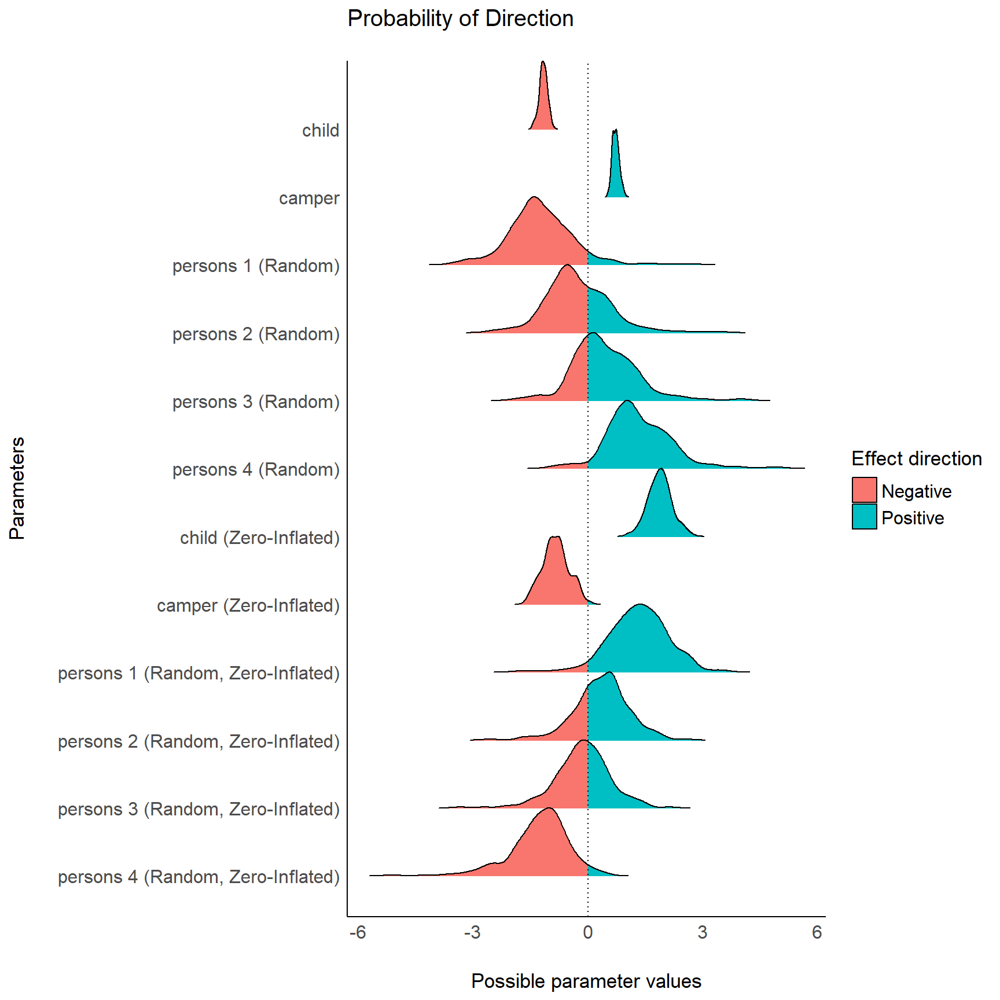
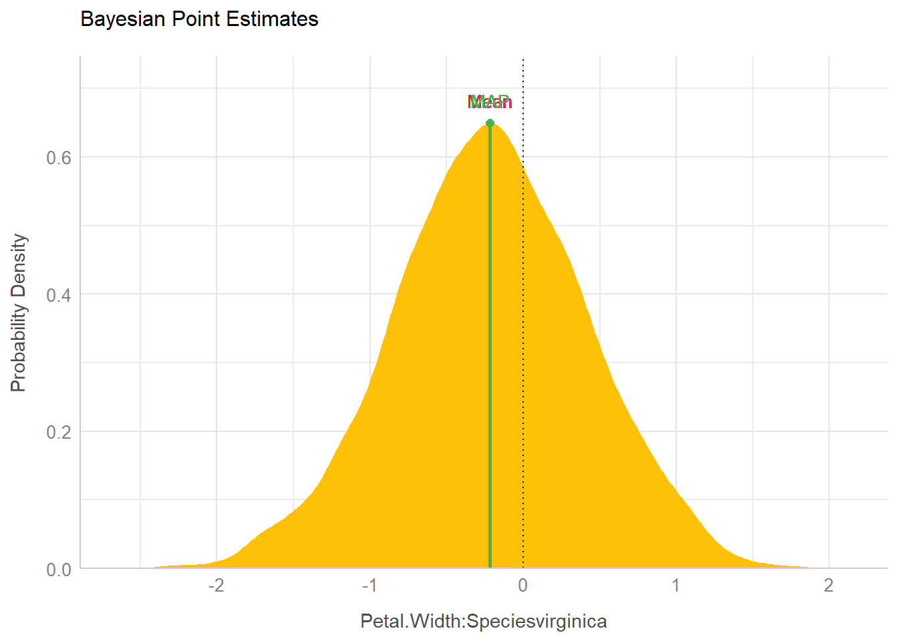
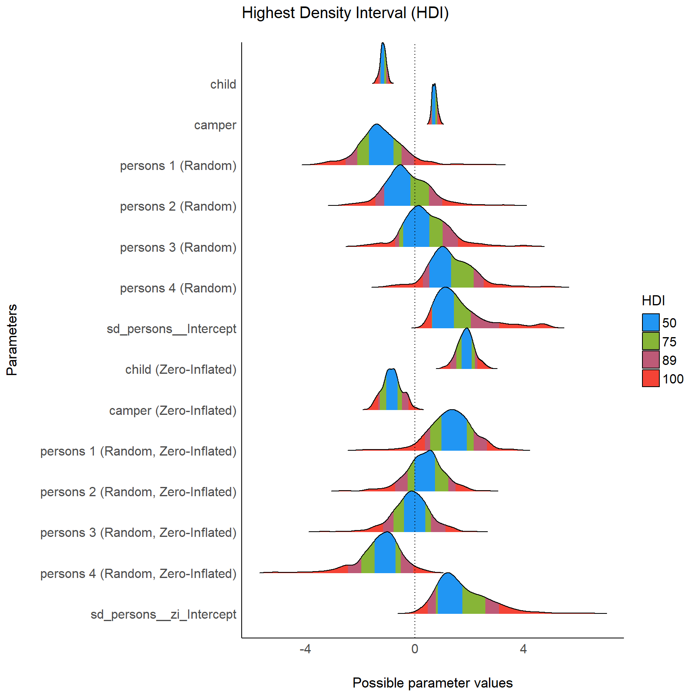
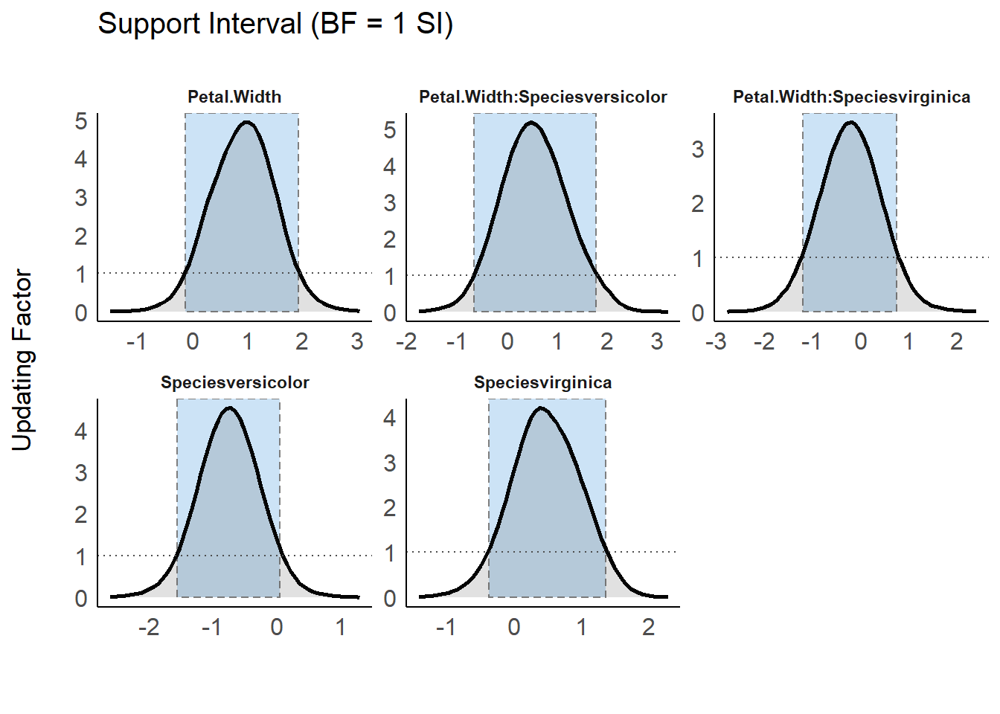
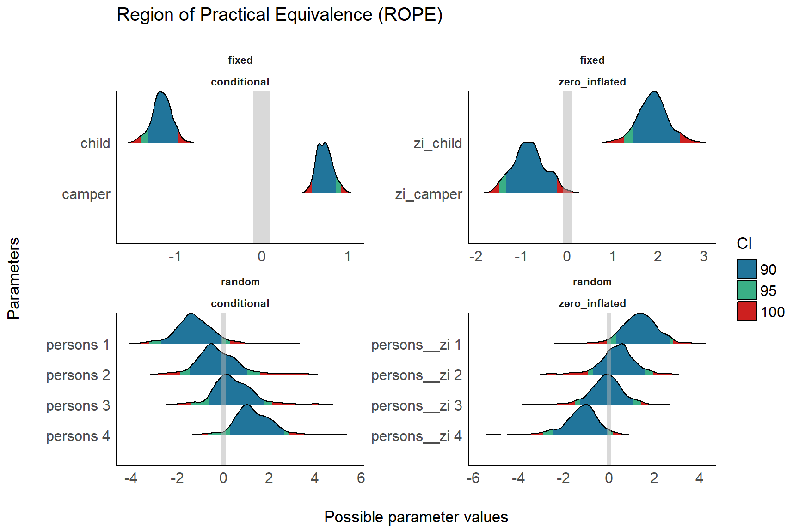
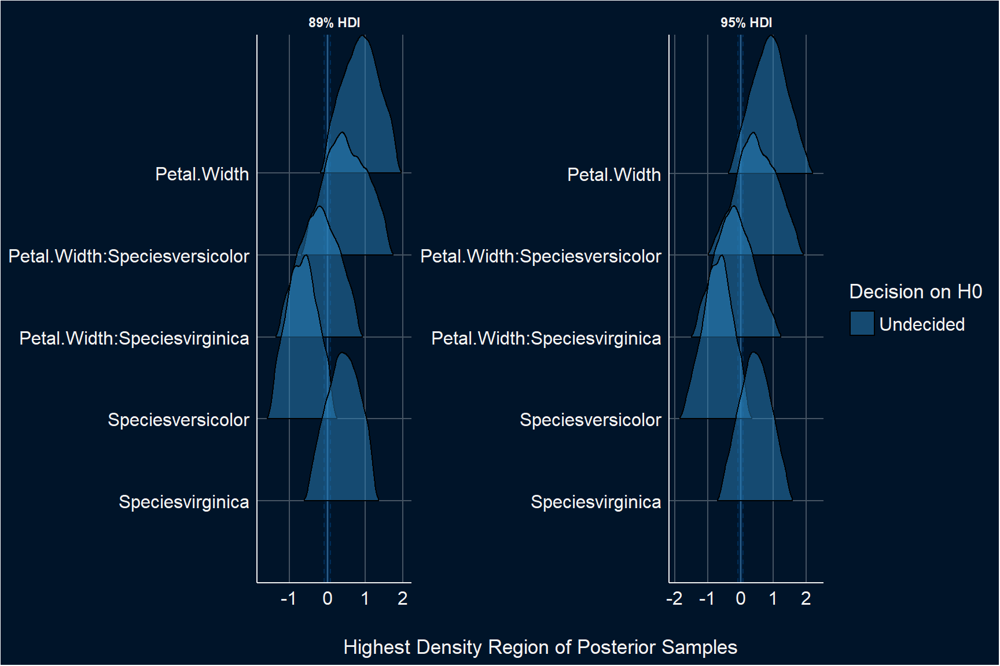
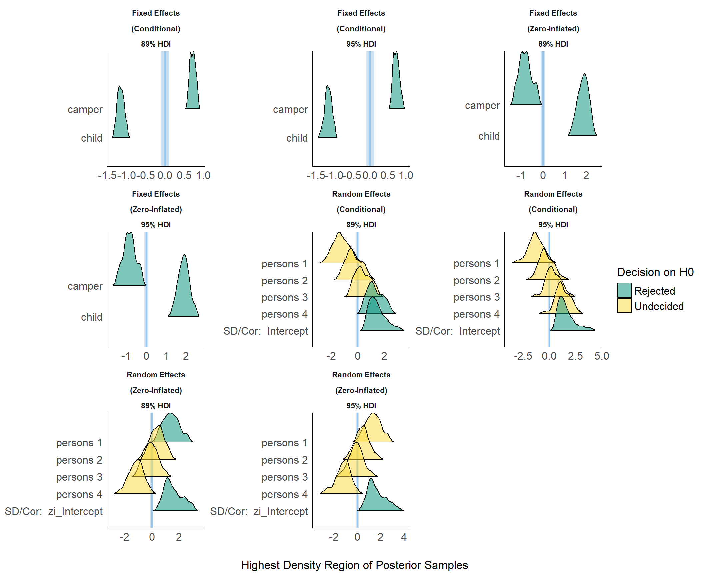
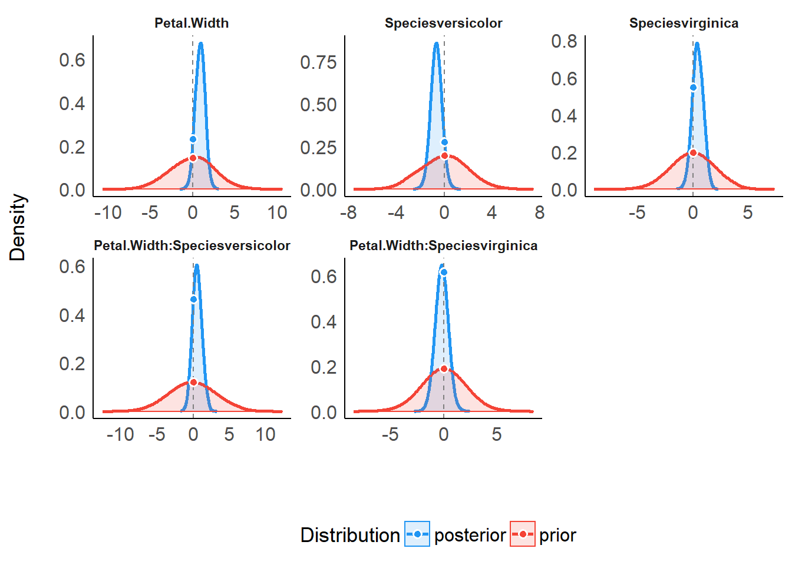
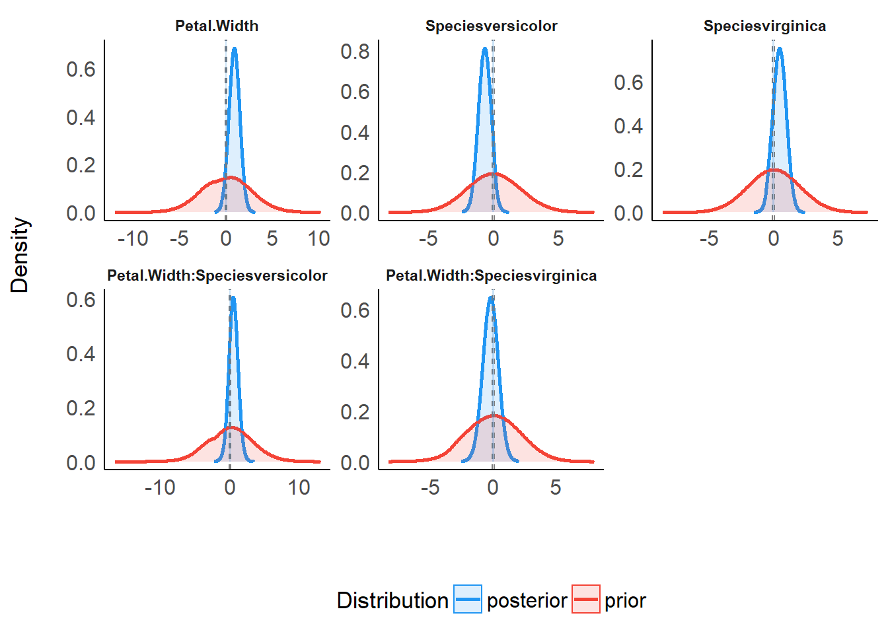
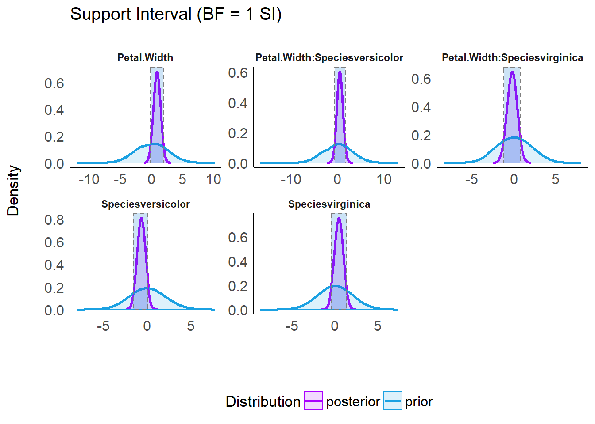

Plotting Functions for the bayestestR Package
bayestestR.RmdSetup and Model Fitting
library(bayestestR)
library(insight)
library(see)
library(rstanarm)
library(ggplot2)
theme_set(theme_modern())set.seed(123)
# model with fixed effects only
model <- rstanarm::stan_glm(Sepal.Length ~ Petal.Width * Species, data = iris)
# model with fixed and random effects as well as zero-inflation component
model2 <- insight::download_model("brms_zi_3")Density Estimation
(related function documentation)
Plotting density estimations of Bayesian regression models will produce plots of the posterior distributions from model parameters, i.e. posterior interval estimates from MCMC draws.
By default, all distributions are “stacked”, i.e. overlaying each other.
result <- estimate_density(model)
plot(result)
To get ridge lines separated by parameters, use stack = FALSE.
plot(result, stack = FALSE)
Adding Prior Samples
For many plots, when the model has defined priors, you can add a layer from the prior distribution for the parameters with priors = TRUE.
plot(result, stack = FALSE, priors = TRUE)
Probability of Direction (pd)
(related function documentation)
The probability of direction (also known as the maximum probability of effect - MPE) varies between 50% and 100% (i.e., 0.5 and 1) and can be interpreted as the probability (expressed in percentage) that a parameter (described by its posterior distribution) is strictly positive or negative (whichever is the most probable).
It is mathematically defined as the proportion of the posterior distribution that is of the median’s sign. Altough differently expressed, this index is fairly similar (i.e., is strongly correlated) to the frequentist p-value
result <- p_direction(model)
result
#> # Probability of Direction (pd)
#>
#> Parameter | pd
#> ---------------------------------------
#> (Intercept) | 100.00%
#> Petal.Width | 92.88%
#> Speciesversicolor | 92.67%
#> Speciesvirginica | 80.50%
#> Petal.Width:Speciesversicolor | 77.92%
#> Petal.Width:Speciesvirginica | 63.00%
plot(result)
For more complex models with different components, each component is displayed in a separate facet. Use n_columns to define the layout, i.e. how many columns are used to display the facets.
result <- p_direction(model2, effects = "all", component = "all")
result
#> # Probability of Direction (pd)
#>
#> # Fixed Effects (Conditional Model)
#>
#> Parameter | pd
#> -------------------
#> Intercept | 94.00%
#> child | 100.00%
#> camper | 100.00%
#>
#> # Fixed Effects (Zero-Inflated Model)
#>
#> Parameter | pd
#> -------------------
#> Intercept | 87.60%
#> child | 100.00%
#> camper | 99.20%
#>
#> # Random Effects (Conditional Model)
#>
#> Parameter | pd
#> ------------------
#> persons 1 | 94.00%
#> persons 2 | 66.00%
#> persons 3 | 70.80%
#> persons 4 | 96.00%
#>
#> # Random Effects (Zero-Inflated Model)
#>
#> Parameter | pd
#> ------------------
#> persons 1 | 95.60%
#> persons 2 | 72.40%
#> persons 3 | 58.00%
#> persons 4 | 97.20%
plot(result)
plot(result, n_columns = NULL)

Practical Significance
(related function documentation)
The probability of practical significance is conceptualized as a unidirectional equivalence test. It returns the probability that an effect is above a given threshold corresponding to a negligible effect in the median’s direction.
Mathematically, it is defined as the proportion of the posterior distribution of the median sign above the threshold.
result <- p_significance(model)
result
#> # Probability of Significance (ps [0.08])
#>
#> Parameter | ps
#> ---------------------------------------
#> (Intercept) | 100.00%
#> Petal.Width | 90.80%
#> Speciesversicolor | 90.03%
#> Speciesvirginica | 75.85%
#> Petal.Width:Speciesversicolor | 73.67%
#> Petal.Width:Speciesvirginica | 57.50%
plot(result)
result <- p_significance(model2, effects = "all", component = "all")
result
#> # Probability of Significance (ps [0.10])
#>
#> # Fixed Effects (Conditional Model)
#>
#> Parameter | ps
#> -------------------
#> Intercept | 92.00%
#> child | 100.00%
#> camper | 100.00%
#>
#> # Fixed Effects (Zero-Inflated Model)
#>
#> Parameter | ps
#> -------------------
#> Intercept | 84.00%
#> child | 100.00%
#> camper | 98.80%
#>
#> # Random Effects (Conditional Model)
#>
#> Parameter | ps
#> ------------------
#> persons 1 | 92.40%
#> persons 2 | 63.20%
#> persons 3 | 64.40%
#> persons 4 | 96.00%
#>
#> # Random Effects (Zero-Inflated Model)
#>
#> Parameter | ps
#> ------------------
#> persons 1 | 95.20%
#> persons 2 | 66.80%
#> persons 3 | 51.20%
#> persons 4 | 96.00%
plot(result)
plot(result, n_columns = NULL)

Point Estimates
(related function documentation)
point_estimate() computes various point-estimates, such as the mean, the median or the MAP, to describe posterior distributions. The plot()-method shows the posterior distribution of related parameters and emphasizes the point estimate within the plot.
result <- point_estimate(model)
result
#> # Point Estimates
#>
#> Parameter | Median | Mean | MAP
#> ------------------------------------------------------
#> (Intercept) | 4.80 | 4.79 | 4.81
#> Petal.Width | 0.88 | 0.86 | 0.94
#> Speciesversicolor | -0.70 | -0.70 | -0.71
#> Speciesvirginica | 0.44 | 0.44 | 0.45
#> Petal.Width:Speciesversicolor | 0.52 | 0.52 | 0.57
#> Petal.Width:Speciesvirginica | -0.20 | -0.20 | -0.17
plot(result)
result <- point_estimate(model, centrality = c("map", "mean"))
result
#> # Point Estimates
#>
#> Parameter | Mean | MAP
#> ---------------------------------------------
#> (Intercept) | 4.79 | 4.81
#> Petal.Width | 0.86 | 0.94
#> Speciesversicolor | -0.70 | -0.71
#> Speciesvirginica | 0.44 | 0.45
#> Petal.Width:Speciesversicolor | 0.52 | 0.57
#> Petal.Width:Speciesvirginica | -0.20 | -0.17
plot(result, panel = FALSE)[[2]]
Highest Density Interval (HDI)
(related function documentation)
hdi() computes the Highest Density Interval (HDI) of posterior distributions. All points within this interval have a higher probability density than points outside the interval.
The HDI can be used in the context of uncertainty characterisation of posterior distributions as Credible Interval (CI).
result <- hdi(model, ci = c(0.5, 0.75, 0.89, 0.95))
result
#> # Highest Density Intervals
#>
#> Parameter | 50% HDI
#> ----------------------------------------------
#> (Intercept) | [ 4.71, 4.92]
#> Petal.Width | [ 0.55, 1.32]
#> Speciesversicolor | [-1.02, -0.39]
#> Speciesvirginica | [ 0.08, 0.78]
#> Petal.Width:Speciesversicolor | [-0.01, 0.90]
#> Petal.Width:Speciesvirginica | [-0.68, 0.16]
#>
#>
#> Parameter | 75% HDI
#> ----------------------------------------------
#> (Intercept) | [ 4.60, 4.96]
#> Petal.Width | [ 0.25, 1.58]
#> Speciesversicolor | [-1.20, -0.12]
#> Speciesvirginica | [-0.18, 0.99]
#> Petal.Width:Speciesversicolor | [-0.31, 1.22]
#> Petal.Width:Speciesvirginica | [-0.86, 0.56]
#>
#>
#> Parameter | 89% HDI
#> ----------------------------------------------
#> (Intercept) | [ 4.54, 5.04]
#> Petal.Width | [-0.07, 1.80]
#> Speciesversicolor | [-1.42, 0.11]
#> Speciesvirginica | [-0.34, 1.29]
#> Petal.Width:Speciesversicolor | [-0.46, 1.62]
#> Petal.Width:Speciesvirginica | [-1.23, 0.75]
#>
#>
#> Parameter | 95% HDI
#> ----------------------------------------------
#> (Intercept) | [ 4.50, 5.12]
#> Petal.Width | [-0.31, 1.98]
#> Speciesversicolor | [-1.65, 0.19]
#> Speciesvirginica | [-0.57, 1.43]
#> Petal.Width:Speciesversicolor | [-0.78, 1.80]
#> Petal.Width:Speciesvirginica | [-1.37, 1.04]
plot(result) + scale_fill_flat()
result <- hdi(model2, ci = c(0.5, 0.75, 0.89), effects = "all", component = "all")
plot(result, n_columns = 2) + scale_fill_metro()
plot(result, n_columns = NULL) + scale_fill_material()
Support Interval
(related function documentation)
Plotting the result of a call to si() results in a plot presenting the prior and posterior distributions for each parameter (note that by default show_intercept = FALSE). The support interval will be denoted by a shaded border.
result <- si(model)
result
#> # Support Interval
#>
#> Parameter | BF = 1 SI
#> ---------------------------------------------
#> (Intercept) | [ 4.35, 5.26]
#> Petal.Width | [-0.14, 1.92]
#> Speciesversicolor | [-1.57, 0.05]
#> Speciesvirginica | [-0.39, 1.36]
#> Petal.Width:Speciesversicolor | [-0.66, 1.77]
#> Petal.Width:Speciesvirginica | [-1.21, 0.75]
plot(result) +
scale_color_metro(palette = "ice") +
scale_fill_metro(palette = "ice")
plot(result, support_only = TRUE) +
scale_color_metro(palette = "ice") +
scale_fill_metro(palette = "ice")
Region of Practical Equivalence (ROPE)
(related function documentation)
rope() computes the proportion (in percentage) of the HDI of a posterior distribution that lies within a region of practical equivalence (ROPE).
The related plot()-method plots posterior distributions, coloring different HDI levels, and adds a “rope” region to the plot that indicates which portion of the posterior distributions lies inside (and outside) the ROPE.
result <- rope(model, ci = c(0.9, 0.95))
result
#> # Proportions of samples inside the ROPE [-0.08, 0.08]:
#>
#> ROPE for the 90% HDI:
#>
#> Parameter | inside ROPE
#> -------------------------------------------
#> (Intercept) | 0.00 %
#> Petal.Width | 4.14 %
#> Speciesversicolor | 5.25 %
#> Speciesvirginica | 10.08 %
#> Petal.Width:Speciesversicolor | 8.89 %
#> Petal.Width:Speciesvirginica | 11.44 %
#>
#>
#> ROPE for the 95% HDI:
#>
#> Parameter | inside ROPE
#> -------------------------------------------
#> (Intercept) | 0.00 %
#> Petal.Width | 3.92 %
#> Speciesversicolor | 4.97 %
#> Speciesvirginica | 9.55 %
#> Petal.Width:Speciesversicolor | 8.42 %
#> Petal.Width:Speciesvirginica | 10.84 %
plot(result, rope_color = "red") +
scale_fill_brewer(palette = "Greens", direction = -1)
result <- rope(model2, ci = c(0.9, 0.95), effects = "all", component = "all")
result
#> # Proportions of samples inside the ROPE [-0.10, 0.10]:
#>
#> ROPE for the 90% HDI:
#>
#> # Fixed Effects (Conditional Model)
#>
#> Parameter | inside ROPE
#> -----------------------
#> Intercept | 2.65 %
#> child | 0.00 %
#> camper | 0.00 %
#>
#> # Fixed Effects (Zero-Inflated Model)
#>
#> Parameter | inside ROPE
#> -----------------------
#> Intercept | 6.19 %
#> child | 0.00 %
#> camper | 0.00 %
#>
#> # Random Effects (Conditional Model)
#>
#> Parameter | inside ROPE
#> -----------------------
#> persons 1 | 1.33 %
#> persons 2 | 8.41 %
#> persons 3 | 11.95 %
#> persons 4 | 0.00 %
#>
#> # Random Effects (Zero-Inflated Model)
#>
#> Parameter | inside ROPE
#> -----------------------
#> persons 1 | 0.00 %
#> persons 2 | 11.95 %
#> persons 3 | 14.16 %
#> persons 4 | 1.33 %
#>
#>
#> ROPE for the 95% HDI:
#>
#> # Fixed Effects (Conditional Model)
#>
#> Parameter | inside ROPE
#> -----------------------
#> Intercept | 2.51 %
#> child | 0.00 %
#> camper | 0.00 %
#>
#> # Fixed Effects (Zero-Inflated Model)
#>
#> Parameter | inside ROPE
#> -----------------------
#> Intercept | 5.86 %
#> child | 0.00 %
#> camper | 0.00 %
#>
#> # Random Effects (Conditional Model)
#>
#> Parameter | inside ROPE
#> -----------------------
#> persons 1 | 2.09 %
#> persons 2 | 7.95 %
#> persons 3 | 11.30 %
#> persons 4 | 0.84 %
#>
#> # Random Effects (Zero-Inflated Model)
#>
#> Parameter | inside ROPE
#> -----------------------
#> persons 1 | 1.67 %
#> persons 2 | 11.30 %
#> persons 3 | 13.39 %
#> persons 4 | 1.67 %
plot(result, rope_color = "grey70") +
scale_fill_social()
Test for Practical Equivalence
(related function documentation)
The test for practical equivalence is based on the “HDI+ROPE decision rule” to check whether parameter values should be accepted or rejected against an explicitly formulated “null hypothesis” (i.e., a ROPE). In other words, it checks the percentage of the 89% HDI that is the null region (the ROPE). If this percentage is sufficiently low, the null hypothesis is rejected. If this percentage is sufficiently high, the null hypothesis is accepted.
result <- equivalence_test(model)
result
#> # Test for Practical Equivalence
#>
#> ROPE: [-0.08 0.08]
#>
#> Parameter | H0 | inside ROPE | 89% HDI
#> ----------------------------------------------------------------------
#> (Intercept) | Rejected | 0.00 % | [ 4.54 5.04]
#> Petal.Width | Undecided | 3.82 % | [-0.07 1.80]
#> Speciesversicolor | Undecided | 5.31 % | [-1.42 0.11]
#> Speciesvirginica | Undecided | 10.19 % | [-0.34 1.29]
#> Petal.Width:Speciesversicolor | Undecided | 8.99 % | [-0.46 1.62]
#> Petal.Width:Speciesvirginica | Undecided | 11.57 % | [-1.23 0.75]
plot(result) +
theme_blackboard() +
scale_fill_material()
result <- equivalence_test(model, ci = c(.89, .95))
result
#> # Test for Practical Equivalence
#>
#> ROPE: [-0.08 0.08]
#>
#> Parameter | H0 | inside ROPE | 89% HDI
#> ----------------------------------------------------------------------
#> (Intercept) | Rejected | 0.00 % | [ 4.54 5.04]
#> Petal.Width | Undecided | 3.82 % | [-0.07 1.80]
#> Speciesversicolor | Undecided | 5.31 % | [-1.42 0.11]
#> Speciesvirginica | Undecided | 10.19 % | [-0.34 1.29]
#> Petal.Width:Speciesversicolor | Undecided | 8.99 % | [-0.46 1.62]
#> Petal.Width:Speciesvirginica | Undecided | 11.57 % | [-1.23 0.75]
#>
#>
#> Parameter | H0 | inside ROPE | 95% HDI
#> ----------------------------------------------------------------------
#> (Intercept) | Rejected | 0.00 % | [ 4.50 5.12]
#> Petal.Width | Undecided | 3.92 % | [-0.31 1.98]
#> Speciesversicolor | Undecided | 4.97 % | [-1.65 0.19]
#> Speciesvirginica | Undecided | 9.55 % | [-0.57 1.43]
#> Petal.Width:Speciesversicolor | Undecided | 8.42 % | [-0.78 1.80]
#> Petal.Width:Speciesvirginica | Undecided | 10.84 % | [-1.37 1.04]
plot(result) +
theme_abyss() +
scale_fill_flat()
result <- equivalence_test(model2, ci = c(.89, .95), effects = "all", component = "all")
result
#> # Test for Practical Equivalence
#>
#> ROPE: [-0.10 0.10]
#>
#> # Fixed Effects (Conditional Model)
#>
#> Parameter | H0 | inside ROPE | 89% HDI
#> ---------------------------------------------------
#> Intercept | Undecided | 2.23 % | [ 0.05 2.27]
#> child | Rejected | 0.00 % | [-1.32 -0.98]
#> camper | Rejected | 0.00 % | [ 0.59 0.86]
#>
#> # Fixed Effects (Zero-Inflated Model)
#>
#> Parameter | H0 | inside ROPE | 89% HDI
#> ---------------------------------------------------
#> Intercept | Undecided | 6.25 % | [-1.89 0.22]
#> child | Rejected | 0.00 % | [ 1.30 2.30]
#> camper | Rejected | 0.00 % | [-1.34 -0.23]
#>
#> # Random Effects (Conditional Model)
#>
#> Parameter | H0 | inside ROPE | 89% HDI
#> ---------------------------------------------------
#> persons 1 | Undecided | 1.79 % | [-2.55 -0.03]
#> persons 2 | Undecided | 8.48 % | [-1.45 1.01]
#> persons 3 | Undecided | 12.05 % | [-0.73 1.59]
#> persons 4 | Rejected | 0.00 % | [ 0.29 2.54]
#>
#> # Random Effects (Zero-Inflated Model)
#>
#> Parameter | H0 | inside ROPE | 89% HDI
#> ---------------------------------------------------
#> persons 1 | Rejected | 0.00 % | [ 0.37 2.66]
#> persons 2 | Undecided | 12.05 % | [-0.73 1.49]
#> persons 3 | Undecided | 14.29 % | [-1.16 1.13]
#> persons 4 | Undecided | 1.34 % | [-2.46 -0.06]
#>
#>
#> # Fixed Effects (Conditional Model)
#>
#> Parameter | H0 | inside ROPE | 95% HDI
#> ---------------------------------------------------
#> Intercept | Undecided | 2.51 % | [-0.59 2.95]
#> child | Rejected | 0.00 % | [-1.40 -0.97]
#> camper | Rejected | 0.00 % | [ 0.59 0.92]
#>
#> # Fixed Effects (Zero-Inflated Model)
#>
#> Parameter | H0 | inside ROPE | 95% HDI
#> ---------------------------------------------------
#> Intercept | Undecided | 5.86 % | [-2.31 0.61]
#> child | Rejected | 0.00 % | [ 1.25 2.48]
#> camper | Rejected | 0.00 % | [-1.50 -0.23]
#>
#> # Random Effects (Conditional Model)
#>
#> Parameter | H0 | inside ROPE | 95% HDI
#> ---------------------------------------------------
#> persons 1 | Undecided | 2.09 % | [-3.24 0.30]
#> persons 2 | Undecided | 7.95 % | [-1.90 1.59]
#> persons 3 | Undecided | 11.30 % | [-1.41 2.13]
#> persons 4 | Undecided | 0.84 % | [-0.69 2.87]
#>
#> # Random Effects (Zero-Inflated Model)
#>
#> Parameter | H0 | inside ROPE | 95% HDI
#> ---------------------------------------------------
#> persons 1 | Undecided | 1.67 % | [-0.09 2.81]
#> persons 2 | Undecided | 11.30 % | [-0.93 1.93]
#> persons 3 | Undecided | 13.39 % | [-1.50 1.42]
#> persons 4 | Undecided | 1.67 % | [-2.92 0.16]
plot(result, n_columns = 3) + theme_modern()
Bayes Factors (BFs)
Bayes Factors for Model Parameters
(related function documentation)
Plotting the result of a call to bayesfactor_parameters() results in a plot presenting the prior and posterior distributions for each parameter (note that by default show_intercept = FALSE). When a point null was tested, two dots represent the density of the null at the value - the ratio of their heights is the value of the Savage-Dickey Bayes factor:
result <- bayesfactor_parameters(model)
result
#> # Bayes Factor (Savage-Dickey density ratio)
#>
#> Parameter | BF
#> ----------------------------------------
#> (Intercept) | 3.19e+32
#> Petal.Width | 0.63
#> Speciesversicolor | 0.71
#> Speciesvirginica | 0.36
#> Petal.Width:Speciesversicolor | 0.26
#> Petal.Width:Speciesvirginica | 0.31
#>
#> * Evidence Against The Null: [0]
plot(result) +
scale_color_material() +
scale_fill_material()
When an interval null was tested, two dashed lines mark the edges of the null interval at the value - the Bayes factor represents the degree by which the distribution mass of the posterior has shifted outside or inside the null interval relative to the prior distribution:
result <- bayesfactor_parameters(model, null = rope_range(model))
result
#> # Bayes Factor (Null-Interval)
#>
#> Parameter | BF
#> ----------------------------------------
#> (Intercept) | 2.24e+32
#> Petal.Width | 0.6
#> Speciesversicolor | 0.71
#> Speciesvirginica | 0.33
#> Petal.Width:Speciesversicolor | 0.26
#> Petal.Width:Speciesvirginica | 0.3
#>
#> * Evidence Against The Null: [-0.08, 0.08]
plot(result) +
scale_color_material() +
scale_fill_material()
Bayes Factors for Model Comparison
(related function documentation)
lm0 <- lm(qsec ~ 1, data = mtcars)
lm1 <- lm(qsec ~ drat, data = mtcars)
lm2 <- lm(qsec ~ wt, data = mtcars)
lm3 <- lm(qsec ~ drat + wt, data = mtcars)
result <- bayesfactor_models(lm1, lm2, lm3, denominator = lm0)
result
#> # Bayes Factors for Model Comparison
#>
#> Model BF
#> [1] drat 0.2
#> [2] wt 0.29
#> [3] drat + wt 0.05
#>
#> * Against Denominator: [4] (Intercept only)
#> * Bayes Factor Type: BIC approximationPizza plots are a visual way of representing the posterior probabilities of several models, with ratio of the areas of any two models corresponding to their posterior odds.1 It is possible to plot all compared models on one (pizza) pie:
plot(result, n_pies = "one", value = "probability") +
scale_fill_pizza(reverse = TRUE) 
But it is also possible to plot one pizza for each model and the denominator model (and who doesn’t like more pizza?):
plot(result, n_pies = "many", value = "BF") +
scale_fill_flat(palette = "rainbow", reverse = TRUE)
When all models are given equal prior probabilities, then all prior odds are 1, and the posterior odds are equal to the Bayes factor.↩︎